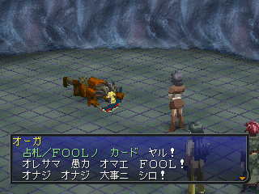

- 페르소나 소환
- 페르소나와 캐릭터와의 상성
- 페르소나의 랭크업
- 페르소나 소환할 때의 추가 카드
- 페르소나의 변이
- 페르소나의 마정 변화
- 타로 카드 입수법
- 바보(FOOL) 카드 입수
- 페르소나의 돌연변이
- 잠재 각성
- 페르소나 토크
- 우호 관계
- 주종 관계
- 적대 관계
- 특수 페르소나 토크
- 변이 전용 페르소나 (ROD, CUP, SWORD, PENTACLE)
- ROD
- CUP
- SWORD
- PENTACLE
- 특수 페르소나 입수
- EMPEROR 루그 (ルーグ) 입수
- 무장 페르소나 입수
페르소나 소환
각 지역에 있는 벨벳룸(ベルベットルーム)에서 페르소나를 소환할 수 있습니다.
- 파티의 최고 레벨 +5 이내의 페르소나까지만 소환할 수 있습니다.
- 소환한 페르소나를 캐릭터에게 항마(降魔)하는 일로, 전투에서 사용할 수 있게 됩니다.
'강마'로 표기하는 일도 있는데, 글쓴이는 이 공략에서 '항마'로 표기를 통일하겠습니다. 무당이 신내림할 때와 같이 강령한다는 '강마'보다는, 악마를 굴복시키는 '항마'라는 표현이 더 좋다고 생각합니다. 캐릭터 자신의 의지로 싸우는 것이니까요.
네이버 일본어 사전 : 降魔 (ごう-ま) 『불교』 항마. 악마를 굴복시킴.
페르소나와 캐릭터와의 상성
캐릭터에 따라 아르카나의 상성이 설정되어 있습니다.
| 상성 |
효과 |
| 최고 |
SP 소비가 통상의 75%로 감소
합체 스킬을 사용할 때 변이를 쉽게 발생시킬 수 있다. |
| 좋음 |
SP 소비가 통상의 75%로 감소 |
| 보통 |
SP 소비의 증감 없음 |
| 나쁨 |
SP 소비가 150%로 증가 |
| 최악 |
항마 불가능 |
페르소나의 랭크업
항마한 페르소나의 스킬을 사용하는 것으로 페르소나의 랭크를 올릴 수 있습니다.
랭크는 1~8까지 있으며, 랭크마다 정해진 스킬을 습득하고, 성장률에 따라 파라미터가 증가합니다.
랭크를 빠르게 올리는 방법
- 페르소나의 상성과 동일한 스킬을 사용
- 페르소나의 돌연변이를 발생시킴
- 아아템 : 어웨이큰(アウェイクン)을 사용
- 액세서리 : 싱크로나이즈 기어(シンクロナイズギア)를 장비
페르소나 소환할 때의 추가 카드
페르소나를 소환할 때 매직 카드, 인센스 카드, 마테리얼 카드를 추가할 수 있습니다.
페르소나의 변이
'변이' 능력을 얻은 페르소나를 다른 페르소나로 '변이'시킵니다.
이때는 카드를 추가할 수 없으며, 항마하고 있으면 변이할 수 없습니다. 주의하세요.
아르카나 중 < ROD, CUP, SWORD, PENTACLE >의 페르소나는 변이로 밖에 소환할 수 없습니다.
페르소나의 마정 변화
랭크 8의 페르소나를 귀환(帰還)시키면 '마정 변화'하고, 여러가지 아이템으로 변화됩니다.
타로 카드 입수법
페르소나의 소환에는 타로 카드가 반드시 필요합니다.
- 타로 카드는 악마와의 '컨택트'로 '흥미'를 최대치로 만들면 입수할 수 있습니다.
- 계약 악마의 경우 '프리 타로(フリータロット)'도 입수할 수 있으므로, 가능한 계약 악마에게서 입수하는 것이 좋습니다.
- 이 '프리 타로'는 벨벳룸에서 악마 화가(悪魔絵師)에게 의뢰하는 일로, FOOL 이외의 원하는 아르카나의 카드로 변화시킬 수 있습니다.
컨택트로 입수 가능한 카드 종류
| 아르카나 |
입수 |
아르카나 |
입수 |
| MAGICIAN |
◯ |
HANGED MAN |
◯ |
| PRIESTES |
× |
DEATH |
◯ |
| EMPRESS |
× |
TEMPERANCE |
◯ |
| EMPEROR |
× |
DEVIL |
◯ |
| HIEROPHANT |
× |
TOWER |
◯ |
| LOVERS |
◯ |
STAR |
◯ |
| CHARIOT |
◯ |
MOON |
◯ |
| STRENGTH |
◯ |
SUN |
× |
| HERMIT |
◯ |
JUDGEMENT |
◯ |
| FORTUNE |
◯ |
WORLD |
◯ |
| JUSTICE |
× |
FOOL |
※ |
- 컨택트를 통해 입수 가능한 아르카나별 타로 카드는 위의 표와 같습니다.
- X 표시가 있는 아르카나는 '프리 타로'에서 변환하는 일로만 입수할 수 있습니다.
- < ROD, CUP, SWORD, PENTACLE >의 아르카나는 변이로만 소환할 수 있습니다.
- 바보(FOOL) 타로 카드 : FOOL 아르카나의 필드상의 악마는 존재하지 않기 때문에, 단순한 컨택트로 입수 불가능입니다. 이 타로 카드를 입수하려면 컨택트로 특수한 조건을 만족시킬 필요가 있습니다. 자세한 내용은 아래의 "바보(FOOL) 카드 입수법"을 참고하세요.
바보(FOOL) 카드 입수

FOOL 아르카나의 악마는 존재하지 않기 때문에 단순히 악마의 흥미를 올려서 입수하는 일은 할 수 없습니다.
바보의 타로 카드를 입수하려면, 컨택트에서 특수한 조건을 만족시킬 필요가 있습니다.
1. 같은 악마로부터 4회 이상의 질문을 받는다.
악마로부터 질문은 <흥미나 분노의 감정을 올렸을 경우>에 발생합니다.
질문은 연속이 아니어도 괜찮습니다. 다만, 중단되었을 경우는 또 다시 흥미나 분노를 올려서 질문을 발생시킬 필요가 있습니다.
2. 4번째 이후의 질문으로 흥미를 끄는 대답을 선택한다.
3. 1/32의 확률로 바보(FOOL) 입수 전용 질문이 발생
4번째 이후의 질문으로 흥미를 최대까지 올린 경우에서도, 확률을 만족시키면 질문이 발생합니다.
2매째 이후는 발생 확률이 1/16이 되므로 입수하기 쉬워집니다.
4. 바보(FOOL) 입수 전용 질문에, "어리석은 (愚か)", "어릿광대 (道化師)"가 들어있는 대답을 선택
or 예외적으로 '신사' 어조의 악마의 "신을 믿는가 (神を信じるか)"라는 질문에 "믿지 않는다 (信じない)"를 선택하여도 입수 가능
상기 순서를 진행하는 것으로 FOOL 카드 1매를 입수할 수 있습니다. 운세의 효과 중에 컨택트가 어려워지는 운세 효과를 발생시키면, 감정 최대까지 4단계가 걸리게 되므로 더욱 하기 쉬워집니다.
페르소나의 돌연변이
합체 스킬로 적을 전멸시켜 전투를 종료시키면, 합체 스킬에 참가한 페르소나의 돌연변이가 발생하는 경우가 있습니다. 이 돌연변이는 4종류가 있습니다.
- 페르소나의 랭크가 2단계 업 (발생 랭크 1~6)
- 페르소나의 모든 기본능력이 2 상승 (발생 랭크 1~8)
- 스킬 습득 (발생 랭크 6이상) : 페르소나 1체에 설정된 1개의 변이용 스킬을 습득
- 변이 능력을 획득 (발생 랭크 7이상)
- 변이 능력을 획득하면 벨벳룸에서 다른 페르소나로 변이시킬 수 있습니다.
- < ROD, CUP, SWORD, PENTACLE >의 페르소나는 변이로만 소환 가능합니다.
- 페르소나마다 변이 후의 페르소나가 정해져 있지만, 낮은 확률로 변이가 실패하는 경우도 있습니다. 이때는 폴터 가이스트(ポルターガイスト)가 됩니다.
- 변이 패턴은 세 가지로 "반드시 A로 변화", "A 고확률, B 저확률 변화", "확률로 A or B로 변화"가 있습니다.
- 이미 소유하고 있는 페르소나로는 변화하지 않기 때문에 미리 페르소나를 소유하는 것으로 변이되는 패턴을 확정시킬 수 있습니다. 변이 실패의 경우도 마찬가지로 벨벳룸 스톡에 '폴터 가이스트'를 만들어두면 실패 가능성이 없어집니다.
- 돌연변이는 "캐릭터와의 궁합이 좋음", "페르소나의 상성과 동일한 스킬의 합체 스킬을 사용" 할수록 발생 확률이 높아집니다.
- 페르소나2 벌에서는 잠재 각성이 추가됐습니다. 자세한 내용은 아래 항목을 참고하세요.
잠재 각성
잠재 각성(潜在覚醒)은 페르소나2 벌에서 추가된 새로운 변이입니다. (여신이문록 페르소나의 잠재 능력 시스템과 거의 동일)
- 잠재 각성은 "미지의 능력에 눈을 떴다 (未知なる能力に目覚めた)"라는 메시지와 함께 잠재 각성을 각성합니다.
- 페르소나와 캐릭터의 TEC 파라미터와 레벨. 페르소나 랭크가 어느 정도 높지 않으면 변이가 발생하지 않는다는 정보가 있습니다.
- 사용한 합체 스킬의 속성과 페르소나의 속성이 일치하면, 잠재 각성의 발동 확률이 높아집니다. (예 : 화 속성의 페르소나 = 화염 속성의 합체 스킬을 사용)
※ 효과는 캐릭터와 페르소나의 상성 관계에 따라 다릅니다.
| 종류 |
발동 조건 |
효과 설명 |
잠재 공격
(潜在攻撃) |
최대 HP의 3/4 이상의 데미지를 받았을 때 |
최고 : 적 전체에 '500' 데미지
좋음 : 적 전체에 '250' 데미지 |
잠재 방어
(潜在防御) |
현재 HP가 최대 HP의 1/8이하의 상태에서 데미지를 받았을 때 |
최고 : 데미지를 반사
좋음 : 데미지를 무효화 |
잠재 보조
(潜在補助) |
현재 HP가 최대 HP의 1/8이하의 상태가 될 때 |
최고 : 타루카쟈, 마카카쟈, 라쿠카쟈, 사마카쟈의 효과가 동시에 걸린다
좋음 : 라쿠카쟈, 사마카쟈의 효과가 동시에 걸린다 |
잠재 회복
(潜在回復) |
최대 HP의 3/4 이상의 데미지를 받았을 때 |
최고 : HP 완전 회복 + 모든 상태 이상 회복
좋음 : HP 완전 회복 |
잠재 부활
(潜在復活) |
'빈사' 상태가 될 때 |
최고 : HP 완전 회복 상태로 부활한다.
좋음 : HP 1/4 회복 상태로 부활 |
잠재 특수
(潜在特殊) |
'빈사' 상태가 될 때 |
보스를 제외한, 적 전체를 전멸시킨다. (사용자는 그대로 '빈사' 상태)
※ 어나더 디멘션(アナザディメンション)으로 '빈사' 상태가 된 경우는 무효 |
페르소나 토크
특정 페르소나를 항마한 상태로, 특정 악마와 조우했을 때!!! (직접 말을 거는 컨택트와는 다릅니다.) 자동적으로 페르소나와 악마가 회화하는 일이 발생합니다.
- 페르소나 토크의 관계는 3종이 있습니다.
- 우호 관계 : 무조건 타로 카드를 받을 수 있다. 카드가 999매 있는 경우는 아이템을 받을 수 있다.
- 주종 관계 : 무조건 타로 카드를 받을 수 있다. 카드가 999매 있는 경우는 HP 전부 회복
- 적대 관계 : 페르소나 토크를 한 악마와 페르소나가 폭주(暴走) 상태가 된다.
- 항마하고 있는 캐릭터의 HP가 줄어든 만큼 발생 확률이 상승합니다.
우호 관계
| 페르소나 |
악마 |
| ピクシー |
ピクシー |
| ジャックフロスト |
ジャックフロスト |
| ジャックランタン |
| ジャックランタン |
ジャックフロスト |
| ジャックランタン |
| バルバトス |
バルバトス |
| サキュバス |
サキュバス |
| ケルベロス |
オルトロス |
| マルス |
アレス |
주종 관계
| 페르소나 |
악마 |
| ロキ |
フェンリル |
| ヘル |
| オーディン |
ヴァルキリー |
| ヘーニル |
| バッカス |
サテュロス |
| インドラ |
カバンダ |
| シヴァ |
ヴァスキ |
| セト |
アペプ |
| ガブリエル |
ケルプ
ソロネ
ドミニオン
ヴァーチャー
パワー
プリンシパリティ
アークエンジェル
エンジェル |
| ミカエル |
ケルプ
ソロネ
ドミニオン
ヴァーチャー
パワー
プリンシパリティ
アークエンジェル
エンジェル |
적대 관계
| 페르소나 |
악마 |
| インドラ |
タクシャカ |
| ケツアルカトル |
テスカトリポカ |
| オーディン |
フェンリル |
| ティシュトリア |
アパオシャ |
| アムルタート |
アエーシュマ |
| アンリ・マンユ |
| アジ・ダハーカ |
| アールマティ |
アエーシュマ |
| アンリ・マンユ |
| アジ・ダハーカ |
특수 페르소나 토크
통상 페르소나 토크 외 특수한 조건과 결과가 나오는 페르소나 토크
| 페르소나 |
악마 |
결과 |
비고 |
| オーディン |
ヴァルキリー |
레젠 브라이트(レジェンブライト)를 입수 |
랭크 8의 오딘(オーディン)이 필요 |
| ハスター |
ビヤーキー |
황금의 벌꿀주(黄金の蜂蜜酒)를 입수 |
상세 설명 #1 |
アドラメルク
バルバドス
シャックス |
アザゼル |
마테리얼 카드 : 속죄의 흑산양(贖罪の黒山羊)을 입수 |
EX던전 한정의 페르소나 토크 |
| ファリードゥーン |
アジ・ダハーカ |
아지・다하카(アジ・ダハーカ)를 격파할 수 있게 된다. |
모나드 만다라(단죄의 계)에서 출현하는 '아지・다하카'는 통상 상태에서 격파가 불가능, 이 페르소나 토크를 발생시켜야 격파할 수 있다. |
상세 설명 #1
- 조건 : 방공호 제4구획에 진입할 수 있게 되고 나서(폐공장 클리어 후), 하스터(ハスター)를 소환&항마한 상태일 때
- 방법 : 방공호 제4구획에 출현하는 비야키(ビヤーキー)와 전투를 시작하면, 페르소나 토크가 발생하고, '황금의 벌꿀주'를 입수할 수 있다.
- 황금의 벌꿀주의 효과 : 사용하면 일정 기간 적의 출현을 완전히 억제하여 적이 나오지 않게 된다. (무한으로 사용 가능)
변이 전용 페르소나 (ROD, CUP, SWORD, PENTACLE)
변이로만 소환할 수 있는 ROD, CUP, SWORD, PENTACLE 페르소나의 변이 가능한 페르소나를 소개합니다.
참고로 변이의 특성상 매직 카드나 인센스 카드를 추가할 수 없습니다.
※ 페르소나의 괄호내의 숫자는 레벨
ROD
| 페르소나명 |
변이 전 페르소나 |
| ホテイ(16) |
テング(16)
アリアンフロッド(15)
ゲンジョウ(14)
ミノタウロス(15)
ネコマタ(14)
スーリヤ(13) |
| ナンキョクロウジン(28) |
テンセンニャンニャン(27)
ネメシス(26)
マルドゥーク(28)
ジャックランタン(26)
タラニス(27)
グリンブルスティ(28)
マルス(25)
カバンダ(24) |
| ノーデンス(44) |
パールヴァティ(41)
ヴィヴィアン(42)
スサノオ(43)
タクシャカ(43)
グンダリミョウオウ(44)
バルバトス(41)
アンクウ(44)
アエーシェマ(42) |
| ケツアルカトル(60) |
マハーカーラ(59)
アドラメルク(57)
ヴァルキリー(60)
セイリュウ(58) |
CUP
| 페르소나명 |
변이 전 페르소나 |
| マツオサマ(12) |
アガートラーム(9)
ロビングッドフェロー(11)
ピクシー(2)
リュウメ(12)
キンナラ(12) |
| ガラハド(36) |
アグリッパ(34)
シフ(34)
セイオウボ(36)
セイテンタイセイ(35)
ビャッコ(33)
ロキ(36)
ヘイムダル(33) |
| バッカス(52) |
アベノセイメイ(49)
アレス(50)
スカンダ(52)
ツクヨミ(51) |
| ダグダ(68) |
ヴァルナ(67)
ウォンロン(68)
セト(68)
ハヌマーン(66) |
SWORD
| 페르소나명 |
변이 전 페르소나 |
| カンショウ(24) |
ウマヤドノオウジ(23)
オトヒメ(21)
テンゲンホウスイ(22)
ヘル(22)
ハーピー(5)
カナロア(24)
ガンダルヴァ(23)
パリカー(20)
キニチ・カクモ(21) |
| クー・フーリン(48) |
リノク(48)
フラカン(45)
サキュバス(47)
アールマティ(48)
フナブ・ク(46) |
| アーサー(56) |
マナナン(55)
ハトホル(55)
ミスラ(53)
ヴリドラ(56)
キニチ・アハウ(56)
フェニックス(54)
ムチャリンダ(54) |
| フツノミタマ(72) |
ルーグ(72)
ティシュトリヤ(71)
ファリードゥーン(70)
アムルタート(69) |
PENTACLE
| 페르소나명 |
변이 전 페르소나 |
| フクロクジュ(20) |
ジャックフロスト(18)
シャックス(17)
フィアラル(19)
ファレグ(17) |
| エビス(32) |
クエレプレ(29)
ケンレンタイショウ(30)
メルキセデク(32)
デメテール(31) |
| ペリ(40) |
バール(37)
ヤマ(39)
ゲンブ(40)
ヒューペリオン(63)
スチュパリデス(37)
スルト(39)
ヘーニル(38) |
| サラスヴァティ(64) |
イシス(62)
スカアハ(64)
ベルゼブブ(61)
ウロボロス(62) |
특수 페르소나 입수
조건에 의해서 소환이 가능한 페르소나를 설명한 항목
EMPEROR 루그 (ルーグ) 입수
1. 먼저 SUN 이루다나(イルダーナ)를 소환하여 항마하거나, 파티 스톡에 배치해놓는다.
2. 방공호 제7구획 또는 '아메노토리후네' B6F에서 출현하는 마나난(マナナン)과 악마의 소문 컨택트를 한다.
그러면 아래와 같은 정보를 얻을 수 있다.
私と同じケルトに「ルーグ」という神がいます。
彼の神、別に「イルダーナ」なる名を
持っています。
比類無き力、正に神の中の神…
貴方も何時の日か、その力を手にする日が
来るかも知れませんね。
3. 이후 SUN 이루다나(イルダーナ)를
변이 시키면, EMPEROR 루그 (ルーグ)를 소환할 수 있다.
무장 페르소나 입수
'스마루성' 진행 중에 입수할 수 있는 3체의 페르소나로, 이전 시나리오 진행 중 이벤트로 플래그를 만족해야 소환이 가능하다.
입수를 완료하기 전까지 스마루성을 클리어하지 않는 것이 필수 조건이다.
입수 플래그의 순서
- '달팽이산' 샛길 진행 중, 에리어7의 남동쪽에 있는 새전함(賽銭箱)에 100엔×100회=1만엔을 투입한다.
- 난조 or 에리 합류 이벤트 이후, 키스멧 출판의 편집장실에서 미즈노(水野) 편집장과 대화의 선택 사항으로 "아니요~무슨 일인가요? (いいえ~何のことでしょぉ?)"를 선택하여 대답한다.
- 이와토야마 클리어 이후, '아카쵸우칭 시라이시'의 사람 찾기로 "니시타니세츠 (ニシタニセツ)"를 찾아둔다.
- '스마루성' 출현 ~ 클리어까지의 기간 동안, 키스멧 출판의 편집장실에서 카시하라 선생(橿原先生)과 대화의 선택 사항으로 아래의 내용을 선택하면, "스마루 키요타다를 토벌한 것은 (澄丸清忠を討ったのは)"의 소문을 입수할 수 있다.
- 들어보겠습니다! (お伺いします!)
- 모반의 주모자는? (謀反の首謀者は?)
- 이전에 사람 찾기로 찾은 "니시타니세츠"를 찾아가서 대화를 하면, "또 한 사람의 영웅 (もう一人の英雄)"의 소문을 입수할 수 있다.
- 입수한 2개의 소문을 퍼트린 후, '스마루성'에 진입한다.
- 3F 공주의 틈(姫の間)에서 이벤트가 발생. "아마노 마이히메 (天野舞姫)"를 소환 가능하게 된다.
- 7F 영령의 틈 (英霊の間)에서 이벤트가 발생. "스오우 타츠노신 (周防辰之進) & 쿠로다 쥰노스케 (黒田純之介)"를 소환 가능하게 된다.
- 이후 벨벳룸에서 3체의 무장 페르소나를 소환할 수 있다.
무장 페르소나 정리
| 페르소나 |
필요 소문 |
입수 플래그 |
| 아마노 마이히메 (天野舞姫) |
또 한 사람의 영웅 (もう一人の英雄) |
사람 찾기 : 니시타니세츠 (ニシタニセツ) |
스오우 타츠노신 (周防辰之進)
쿠로다 쥰노스케 (黒田純之介) |
스마루 키요타다를 토벌한 것은 (澄丸清忠を討ったのは) |
1. 달팽이산 새전함에 1만엔 투입
2. 미즈노 편집장과 대화에서 "아니요"를 선택
3. 카시하라 선생(橿原先生)과 대화 |
무장 페르소나의 성능
3체 무장 페르소나의 공통점으로 상성에 약점이 없다는 것과 소유 스킬이 2개인 점이다. (마지막 스킬은 랭크 8에 습득할 수 있다.)
8랭크 스킬로 합체 스킬 : 천주살(天誅殺)을 사용할 수 있다.
| 명칭 |
상성 |
범위 |
효과 |
합체 순서 (위→아래) |
천주살
(天誅殺) |
검격 |
적 1체 |
특대 데미지 or
'스마루성'의 BOSS : 고젠(御前)에게 사용하면 '빈사' 효과 |
비공침(秘孔針) = (黒田純之介)
가호의 춤(加護の舞) = (天野舞姫)
강절단(剛切断) = (周防辰之進) |
이 3체의 랭크 8 스킬로 발생시키는 '천주살'은 '스마루성'의 보스 고젠(御前)을 일격에 쓰러뜨릴 수 있다.
이외에는 검격계 특대 데미지만 줄 수 있으므로, 실질적으로 '천주살' 전용 페르소나가 된다.
이 중에서 "쿠로다 쥰노스케 (黒田純之介)"는 마정 변화로,
카르마 링(カルマリング)을 입수할 수 있다. 2주차에도 계승할 수 있는 아이템이니 기억해두자.